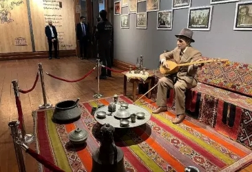

Âşık Veysel Müzesi, Türkiye'de Sivas'ta, Şarkışla ilçesine bağlı Sivrialan Köyü'nde yer almaktadır. Müze, ünlü Türk halk ozanı Âşık Veysel Şatıroğlu'nun doğduğu evde 1982 yılında açılmıştır. Kültür Bakanlığı tarafından 1979 yılında kamulaştırılan ev, 1982 yılında yenilenerek müze olarak ziyarete açılmıştır.[1] Müzede Âşık Veysel'in kişisel eşyaları, fotoğrafları, şiirleri ve onunla ilgili yayınlanan eserler sergilenmektedir. Ayrıca her yıl 9-11 Temmuz tarihleri arasında Sivas'ta ve Şarkışla-Sivrialan Köyü'nde anma törenleri düzenlenmektedir. Bunun yanı sıra, “Âşık Veysel Âşıklar Bayramı” adı altında bir festival de yapılmaktadır.[2] Âşık Veysel, gözlerini çiçek hastalığına kurban vermiştir ve bu nedenle "bütün hislerim kulaklarımda… şehirde o gürültüler kulağımı kapatıyor" diyerek kırsal kesimde yaşamayı tercih etmiştir. Sağlığında adı duyulan Âşık Veysel, kırk vilayeti, köy enstitülerini gezdikten sonra evine dönmüş ve yine aynı köyde ölmüştür.
